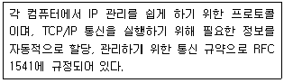
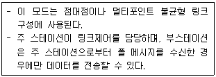
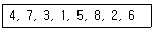
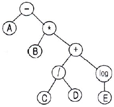
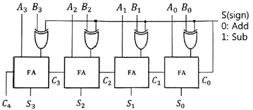
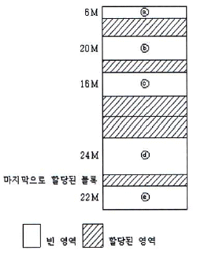
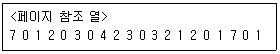
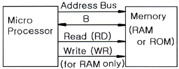

전자계산기조직응용기사 (2016-08-02 기출문제)
1과목: 전자계산기 프로그래밍
1. 어셈블리어에서 어떤 기호적 이름에 상수 값을 할당하는 명령은?
- EQU
- PTR
- MOV
- LEA
(정답률: 86%)

2. C 언어에서 키보드로부터 한 문자를 입력받는 기능을 하는 것은?
- getchar()
- putchar()
- while)()
- printf()
(정답률: 84%)
3. 프로그램에서 함수를 호출하는 부분과 실제로 이러한 함수 호출에 의하여 실행되는 명령어들을 연결하는 작업 또는 프로그램에서 사용되는 변수와 이러한 변수 이름에 의하여 접근되는 기억장소 위치를 연결하는 작업을 무엇이라고 하는가?
- comment
- loading
- binding
- paging
(정답률: 79%)
4. 시스템 프로그래밍에 가장 적합한 언어는?
- COBOL
- BASIC
- C
- FORTRAN
(정답률: 85%)
5. 문자열의 내용을 레지스터로 가져오는 어셈블리어 명령은?
- LODSB
- CMP
- CBW
- NEG
(정답률: 65%)
6. 프로그래밍 언어의 수행 순서로 옳은 것은?
- 소스코드→링커→로더→컴파일러→목적코드
- 소스코드→목적코드→링커→로더→컴파일러
- 소스코드→로더→컴파일러→링커→목적코드
- 소스코드→컴파일러→목적코드→링커→로더
(정답률: 82%)
7. 세그먼트 레지스터에 각 세그먼트의 시작번지를 할당하여 현재의 세그먼트가 어느 것인가를 지적하게 하는 어셈블리어 명령은?
- EXTERN
- PUBLIC
- ASSUME
- EJECT
(정답률: 61%)
8. 매크로에 대한 설명으로 옳지 않은 것은?
- 사용자의 반복적인 코드 입력을 줄여준다.
- 매크로 이름이 호출되면 호출된 횟수만큼 정의된 매크로 코드가 해당 위치에 삽입되어 실행된다.
- 매크로 정의 내에 또 다른 매크로를 정의할 수 없다.
- 일종의 부프로그램으로 개방 서브루틴이라고도 한다.
(정답률: 81%)
9. 기계어에 대한 설명으로 가장 옳지 않은 것은?
- 프로그램 작성이 어렵고 복잡하다.
- 컴퓨터가 해석할 수 있는 1 또는 0의 2진수로 이루어진다.
- 실행할 명령, 데이터, 기억 장소의 주소 등을 포함한다.
- 각 컴퓨터마다 모두 같은 기계어를 가진다.
(정답률: 85%)
10. 매크로 프로세서의 기본적 수행 기능에 해당하지 않는 것은?
- 매크로 호출 인식
- 매크로 정의 저장
- 매크로 정의 확장
- 매크로 확장 및 인수 치환
(정답률: 71%)
11. 어셈블리어에서 라이브러리에 기억된 내용을 프로시저로 정의하여 서브루틴으로 사용하는 것과 같이 사용할 수 있도록 그 내용을 현재의 프로그램 내에 포함시켜 주는 명령은?
- EVEN
- INCLUDE
- ORG
- NOP
(정답률: 83%)
12. 표준 C 언어에서 포인터(pointer)에 대한 설명으로 옳지 않은 것은?
- 포인터는 메모리 주소를 가질 수 있는 형이다.
- 포인터는 메모리 주소 값과 메모리 주소가 가리키는 위치에 있는 값을 다룰 수 있다.
- 포인터의 주소 연산자는 ″%″를 이용하여 사용자 임의로 만들 수 있다.
- 배열과 같은 연속된 데이터 집합을 다룰 때 포인터 연산을 이용하면 유용하다.
(정답률: 77%)
13. C 언어의 기억 클래스 종류가 아닌 것은?
- 자동(automatic) 변수
- 프로세스(process) 변수
- 레지스터(register) 변수
- 정적(static) 변수
(정답률: 68%)
14. 어셈블리어에 대한 설명으로 옳지 않은 것은?
- 명령 기능을 쉽게 연상할 수 있는 기호를 기계어와 1:1로 대응시켜 코드화한 기호언어이다.
- 어셈블리어의 기본 동작은 동일하지만 작성한 CPU마다 사용되는 어셈블리어가 다를 수 있다.
- 프로그램에 기호화된 명령 및 주소를 사용한다.
- 어셈블리어로 작성한 원시 프로그램은 로더를 통해 목적 프로그램으로 번역한다.
(정답률: 74%)
15. 변수의 값이 저장된 기억 장소, 위치를 확인할 수 있는 것은 변수의 어떤 구성 요소에 의해서 가능한가?
- 이름
- 값
- 참조기능
- 대입기능
(정답률: 79%)
16. 표준 C 언어에서 ″printf″에 사용되는 파라미터(parameter) 중 변환 문자열에 대한 의미로 틀린 것은?
- %o : 2진수로 출력한다.
- %c : 문자로 출력한다.
- %f : 부동 소수점 수로 출력한다.
- %d : 10진수로 출력한다.
(정답률: 74%)
17. 표준 C 언어의 Escape Character의 약호가 잘못 짝지어진 것은?
- ＼t : tab
- ＼b : backspace
- ＼f : new line
- ＼o : null character
(정답률: 84%)
18. 프로그램 내에서 양쪽 오퍼랜드에 기억된 내용을 바꾸어야 할 때 사용하는 어셈블리어 명령은?
- EJECT
- INC
- DEC
- XCHG
(정답률: 80%)
19. 작성된 표현식이 BNF의 정의에 의해 바르게 작성되었는지를 확인하기 위하여 만든 트리는?
- Hierarchy Tree
- Extension Tree
- Parse Tree
- Class Tree
(정답률: 87%)
20. 어셈블리 언어에서 원시프로그램을 번역할 때 어셈블러에게 요구되는 동작을 지시하는 명령으로서 기계어로 번역되지 않는 명령어를 무엇이라고 하는가?
- macro instruction
- pseudo instruction
- machine instruction
- operand instruction
(정답률: 82%)
2과목: 자료구조 및 데이터통신
21. 대역폭이 B(Hz), 신호대잡음비가 0인 채널을 사용하여 데이터를 전송하는 경우 채널용량(bps)은?
- 0
- B
- 2B
- 4B
(정답률: 60%)
22. [보기]에서 설명하고 있는 프로토콜은?

- LDP
- DHCP
- ARP
- RTCP
(정답률: 57%)
23. 변조속도가 2400buad이고 16진QAM을 사용하는 경우 데이터 신호속도(bps)는?
- 4800
- 9600
- 12400
- 19200
(정답률: 81%)
24. 10.0.0.0 네트워크 전체에서 마스크 255.240.0.0를 사용할 경우 유효한 서브넷 ID는?
- 10.1.16.9
- 10.16.0.0
- 10.27.32.0
- 10.0.1.32
(정답률: 56%)
25. HDLC의 세 가지 동작 모드 중 [보기] 설명에 해당하는 것은?

- NRM
- ARM
- ABM
- NBM
(정답률: 50%)
26. 데이터 전송을 하고자 하는 모든 단말 장치는 서로 대등한 입장에 있으며, 송신 요구를 먼저 한쪽이 송신권을 갖는 방식은?
- Contention 방식
- Polling 방식
- Selection 방식
- Routing 방식
(정답률: 45%)
27. OSI 7계층에서 통신 매체에 대해 전기적, 기계적인 인터페이스를 다루며, 비트를 전송하기 위해 전기적 신호로 부호화하여 전송하는 계층은?
- 응용계층
- 물리계층
- 네트워크계층
- 표현계층
(정답률: 72%)
28. 일반적으로 불균형적인 멀티 포인트(Multi-point) 링크 구성에서 회선제어를 할 때, 주국(Primary Station)이 각 보조국(Secondary Station)에게 데이터를 요청하는 방법은?
- 폴링(Polling)
- 셀렉션(Selection)
- 요청(Request)
- 응답(Response)
(정답률: 50%)
29. 전송 매체상의 전송 프레임마다 해당 채널의 시간 슬롯이 고정적으로 할당되는 다중화 방식은?
- 주파수 분할 다중화
- 동기식 시분할 다중화
- 위상편이 시분할 다중화
- 코드 분할 다중화
(정답률: 79%)
30. CSMA/CD에서 사용되는 LAN 표준 프로토콜은?
- IEEE 802.3
- IEEE 802.4
- IEEE 802.5
- IEEE 802.12
(정답률: 54%)
31. 데이터베이스의 특성으로 거리가 먼 것은?
- Concurrent Sharing
- Content Reference
- Discrete Evolution
- Real-Time Accessibility
(정답률: 70%)
32. 데이터베이스 설계 순서로 옳은 것은?
- 개념적 설계 → 논리적 설계 → 물리적 설계
- 논리적 설계 → 물리적 설계 → 개념적 설계
- 물리적 설계 → 개념적 설계 → 논리적 설계
- 개념적 설계 → 물리적 설계 → 논리적 설계
(정답률: 84%)
33. 해싱에서 서로 다른 두 개의 키 값이 같은 해시(hash) 주소를 갖는 현상을 무엇이라고 하는가?
- Mid-square
- Chaining
- Parsing
- Collision
(정답률: 83%)
34. 스키마의 종류 중 데이터베이스의 전체적인 논리적 구조로서, 모든 응용 프로그램이나 사용자들이 필요로 하는 데이터를 종합한 조직 전체의 데이터베이스로 하나만 존재하는 것은?
- 개념 스키마
- 내부 스키마
- 외부 스키마
- 응용 스키마
(정답률: 68%)
35. 트랜잭션의 특성에 해당하지 않는 것은?
- Atomicity
- Consistency
- Distribution
- Isolation
(정답률: 80%)
36. 자료구조를 선형구조와 비선형구조로 구분할 때 성격이 다른 하나는?
- 트리
- 큐
- 스택
- 데크
(정답률: 84%)
37. 다음 자료에 대하여 버블 정렬(bubble sort)을 이용하여 오름차순으로 정렬할 경우 ″pass 1″의 실행 결과는?

- 3, 1, 4, 5, 2, 6, 7, 8
- 1, 3, 4, 2, 5, 6, 7, 8
- 4, 3, 1, 5, 7, 2, 6, 8
- 1, 3, 2, 4, 5, 6, 7, 8
(정답률: 77%)
38. DBMS의 필수 기능으로 옳게 짝지어진 것은?
- 조작기능, 제어기능, 연쇄기능
- 정의기능, 조작기능, 독립기능
- 정의기능, 제어기능, 보안기능
- 정의기능, 조작기능, 제어기능
(정답률: 82%)
39. 다음 트리를 후위(postorder) 조사(traverse)할 때 옳게 나타낸 식은?

- A-B*(C/D+log E)
- -A*B+/log CDE
- ABCD/E log+*-
- -*+/log ABCDE
(정답률: 72%)
40. 데이터베이스의 정의로 가장 거리가 먼 것은?
- 여러 응용 시스템들이 공동으로 소유하고 유지하는 데이터이다.
- 자료의 중복을 권장하는 데이터의 모임이다.
- 조직의 고유한 업무를 수행하는 데 존재가치가 확실한 필수적 데이터이다.
- 컴퓨터가 접근할 수 있는 저장 매체에 저장된 데이터이다.
(정답률: 83%)
3과목: 전자계산기구조
41. 간접 상태(Indirect state) 동안에 수행되는 것은?
- 명령어를 읽는다.
- 오퍼랜드의 주소를 읽는다.
- 오퍼랜드를 읽는다.
- 인터럽트를 처리한다.
(정답률: 58%)
42. CPU가 어떤 명령과 다음 명령을 수행하는 사이를 이용하여 하나의 데이터 워드를 직접 전송하는 DMA 방식을 무엇이라고 하는가?
- word stealing
- word transfer
- cycle stealing
- cycle transfer
(정답률: 50%)
43. 메모리로부터 읽혀진 명령어의 오퍼레이션 코드(OP-code)는 CPU의 어느 레지스터에 들어가는가?
- 누산기
- 임시 레지스터
- 연산 논리장치
- 인스트럭션 레지스터
(정답률: 53%)
44. 누산기(accumulator)에 대한 설명으로 가장 옳은 것은?
- 연산장치에 있는 레지스터(register)의 하나로 연산 결과를 일시적으로 기억하는 장치이다.
- 주기억장치 내에 존재하는 회로로 가감승제 계산 및 논리 연산을 행하는 장치이다.
- 일정한 입력 숫자들을 더하여 그 누계를 항상 보관하는 장치이다.
- 정밀 계산을 위해 특별히 만들어 두어 유효 숫자의 개수를 늘리기 위한 것이다.
(정답률: 66%)
45. interleaved memory에 대한 설명과 가장 관계가 없는 것은?
- 중앙처리장치의 쉬는 시간을 줄일 수 있다.
- 단위시간당 수행할 수 있는 명령어의 수를 증가시킬 수 있다.
- 이 기억장치를 구성하는 모듈의 수 만큼의 단어들에 동시 접근이 가능하다.
- 주메모리의 데이터의 저장 공간을 가상기억공간에 맵핑하여 확장하기 위한 방법이다.
(정답률: 54%)
46. IEEE 754에서 규정하는 부동소수(Floating point number)를 표현하는데 필요로 하지 않는 비트 정보는?
- Sign
- Biased exponent
- Point
- Fraction
(정답률: 50%)
47. 16개의 입력선을 가진 multiplexer의 출력에 32개의 출력선을 가진 demultiplexer를 연결했을 경우에 multiplexer와 demultiplexer의 선택 선은 각각 몇 개를 가져야 하는가?
- 멀티플렉서 : 4개, 디멀티플렉서 : 5개
- 멀티플렉서 : 4개, 디멀티플렉서 : 3개
- 멀티플렉서 : 8개, 디멀티플렉서 : 4개
- 멀티플렉서 : 4개, 디멀티플렉서 : 8개
(정답률: 68%)
48. 4비트 데이터 0101을 해밍코드(hamming code)로 표현하려고 한다. 코드의 구성은 P1 P2 D3 P4 D5 D6 D7과 같이 한다. 여기서 Pn은 패리티 비트를 의미하고, Dn은 데이터 즉, 0101을 의미한다. 변환된 해밍코드는?
- 0 0 0 0 1 0 1
- 0 0 0 1 1 0 1
- 0 1 0 0 1 0 1
- 0 1 0 1 1 0 1
(정답률: 50%)
49. 출력 측의 일부가 입력 층에 피드백 되어 유발되는 레이스 현상을 없애기 위해 고안된 플립플롭은?
- JK 플립플롭
- M/S 플립플롭
- RS 플립플롭
- D 플립플롭
(정답률: 50%)
50. Instruction을 수행하기 위한 Major State에 관한 설명으로 가장 옳은 것은?
- 명령어를 가져오기 위해 기억장치에 접근하는 것을 Fetch 상태라 한다.
- Execute 상태를 간접주소 지정방식의 경우만 수행된다.
- CPU의 현재 상태를 보관하기 위한 기억장치 접근을 Indirect 상태라 한다.
- 명령어 종류를 판별하는 것을 Indirect 상태라 한다.
(정답률: 61%)
51. 인터럽트 요청신호 플래그(Flag)를 차례로 검사하여 인터럽트의 원인을 판별하는 방식은?
- 스트로브 방식
- 데이지체인 방식
- 폴링 방식
- 하드웨어 방식
(정답률: 54%)
52. 주기억장치는 하드웨어의 특성상 주기억장치가 제공할 수 있는 정보 전달 능력에 한계가 있는데, 이 한계를 주기억장치의 무엇이라 하는가?
- Transfer
- bandwidth
- accesswidth
- transferwidth
(정답률: 62%)
53. 마이크로프로그램 제어기가 다음에 수행할 마이크로 인스트럭션의 주소를 결정하는데 사용하는 정보가 아닌 것은?
- 인스트럭션 레지스터(IR)
- 타이밍 신호
- CPU의 상태 레지스터
- 마이크로 인스트럭션에 나타난 주소
(정답률: 53%)
54. Flynn의 컴퓨터 구조 분류법 중 여러 개의 처리기에서 수행되는 명령어들은 각기 다르나 전체적으로 하나의 데이터 스트림을 가지는 형태는?
- SISD
- MISD
- SIMD
- MIMD
(정답률: 66%)
55. 조합논리회로 중 중앙처리장치에서 번지 해독, 명령 해독 등에 사용되는 회로는?
- 디코더(Decoder)
- 엔코더(Encoder)
- 멀티플렉서(MUX)
- 디멀티플렉서(DEMUX)
(정답률: 72%)
56. 인스트럭션 세트의 효율성을 높이기 위하여 고려할 사항이 아닌 것은?
- 기억공간
- 사용빈도
- 레지스터의 종류
- 주기억장치 밴드폭 이용
(정답률: 47%)
57. 다음 조합 논리 회로의 명칭은?

- 플립플롭
- 4비트 비교기
- 4×4 디코더
- 4비트 병렬 가감산기
(정답률: 67%)
58. 메가플롭스(MFLOPS)에 대하여 가장 잘 설명한 것은?
- 1클록 펄스 간에 실행되는 부동소수점 연산의 수를 10만을 단위로 하여 나타낸 수
- 1클록 펄스 간에 실행되는 고정소수점 연산의 수를 10만을 단위로 하여 나타낸 수
- 1초간에 실행되는 부동소수점 연산의 수를 100만을 단위로 하여 나타낸 수
- 1초간에 실행되는 고정소수점 연산의 수를 100만을 단위로 하여 나타낸 수
(정답률: 63%)
59. 플립플롭에 대한 설명 중 틀린 것은?
- D 플립플롭은 RS 플립플롭의 변형된 형태의 플립플롭이다.
- D 플립플롭은 입력 값에 관계없이 현 상태 값이 그대로 출력된다.
- T 플립플롭은 JK 플립플롭의 두 개의 입력을 하나로 묶은 플립플롭이다.
- T 플립플롭의 입력이 1이면 현 상태의 값이 출력된다.
(정답률: 54%)
60. 8진수 474를 2진수로 변환하면?
- 101 111 101
- 010 001 110
- 011 110 011
- 100 111 100
(정답률: 70%)
4과목: 운영체제
61. 분산 처리 운영체제 시스템을 설계하는 주된 이유가 아닌 것은?
- 신뢰도 향상
- 자원 공유
- 보안의 향상
- 연산 속도 향상
(정답률: 67%)
62. 운영체제(Operating System)의 기능으로 옳지 않은 것은?
- 컴퓨터의 자원(Resource)들을 효율적으로 관리하는 기능
- 입ㆍ출력에 대한 일을 대행하거나 사용자가 컴퓨터를 손쉽게 사용할 수 있도록 하는 인터페이스 기능
- 사용자가 작성한 원시 프로그램을 기계언어(Machine-Language)로 번역시키는 기능
- 시스템에서 발생하는 오류(Error)로부터 시스템을 보호하는 신뢰성 기능
(정답률: 72%)
63. 버퍼링과 스풀링에 대한 설명으로 가장 옳지 않은 것은?
- 버퍼링과 스풀링은 페이지 교체 기법의 종류이다.
- 스풀링의 SPOOL은 ″Simultaneous Peripheral Operation On-Line″의 약어이다.
- 버퍼링은 주기억장치의 일부를 사용한다.
- 스풀링은 디스크의 일부를 사용한다.
(정답률: 50%)
64. 그림과 같은 메모리 구성에서 15M 크기의 블록을 메모리에 할당하고자 한다. ⓒ 영역에 할당시킬 경우 사용된 정책은 무엇인가?

- Best-Fit
- First-Fit
- Next-Fit
- Worst-Fit
(정답률: 70%)
65. 은행원 알고리즘은 교착상태 해결 방법 중 어떤 기법에 해당하는가?
- Prevention
- Recovery
- Avoidance
- Detection
(정답률: 75%)
66. UNIX의 특징이 아닌 것은?
- 트리 구조의 파일 시스템을 갖는다.
- 대화식 운영체제이다.
- Multi-User는 지원하지만 Multi-Tasking은 지원하지 않는다.
- 이식성이 높으며, 장치, 프로세스 간의 호환성이 높다.
(정답률: 75%)
67. 스레드(Thread)에 대한 설명으로 가장 적합하지 않은 것은?
- 한 개의 프로세스는 여러 개의 스레드를 가질 수 없다.
- 커널 스레드의 경우 운영체제에 의행 스레드를 운용한다.
- 사용자 스레드의 경우 사용자가 만든 라이브러리를 사용하여 스레드를 운용한다.
- 스레드를 사용함으로써 하드웨어, 운영체제의 성능과 응용 프로그램의 처리율을 향상시킬 수 있다.
(정답률: 71%)
68. 다중 처리기 운영체제 구조 중 주/종(Master/Slave) 처리기 시스템에 대한 설명으로 옳지 않은 것은?
- 종프로세서는 입출력 발생 시 주프로세서에게 서비스를 요청한다.
- 주프로세서는 입출력과 연산 작업을 수행한다.
- 한 처리기를 종프로세서로 지정하고 다른 처리기들은 주프로세서로 지정하는 구조이다.
- 주프로세서만이 운영체제를 실행할 수 있다.
(정답률: 56%)
69. Virtual Memory에서 Main Memory로 페이지를 옮겨 넣을 때 주소를 조정해 주어야 하는데 이를 무엇이라고 하는가?
- mapping
- scheduling
- matching
- loading
(정답률: 74%)
70. 프로세스 상태의 종류가 아닌 것은?
- Ready
- Running
- Request
- Exit
(정답률: 50%)
71. 운영체제에 대한 설명으로 가장 옳지 않은 것은?
- 여러 사용자들 사이에서 자원의 공유를 가능하게 한다.
- 사용자 인터페이스를 제공한다.
- 자원의 효과적인 경영 및 스케줄링을 한다.
- 운영체제의 종류에는 UNIX, LINUX, JAVA 등이 있다.
(정답률: 70%)
72. 마스터 파일 디렉토리와 각 사용자별로 만들어지는 사용자 파일 디렉토리로 구성되는 디렉토리 구조는?
- 트리 디렉토리 구조
- 비순환 그래프 디렉토리 구조
- 1단계 디렉토리 구조
- 2단계 디렉토리 구조
(정답률: 54%)
73. 디스크 스케줄링에서 SSTF(Shortest Seek Time First)에 대한 설명으로 가장 적합하지 않은 것은?
- 탐색 거리가 가장 짧은 요청이 먼저 서비스를 받는다.
- 일괄처리 시스템보다는 대화형 시스템에 적합하다.
- 가운데 트랙이 안쪽이나 바깥쪽 트랙보다 서비스 받을 확률이 높다.
- 헤드에서 멀리 떨어진 요청은 기아상태(starvation)가 발생할 수 있다.
(정답률: 54%)
74. 스케줄링 방식 중 라운드 로빈 방식에서 시간간격을 무한히 크게 하면 어떤 방식과 동일하게 되는가?
- LIFO 방식
- FIFO 방식
- HRN 방식
- Multilevel Queue 방식
(정답률: 55%)
75. 다음의 페이지 참조 열(Page reference string)에 대해 페이지 교체 기법으로 FIFO를 사용할 경우 페이지 부재(Page Fault) 횟수는? (단, 할당된 페이지 프레임 수는 3이고, 처음에는 모든 프레임이 비어 있음)

- 6
- 12
- 15
- 20
(정답률: 55%)
76. 페이징 기법과 세그먼테이션 기법에 대한 설명으로 가장 옳지 않은 것은?
- 페이징 기법에서는 주소 변환을 위한 페이지 맵 테이블이 필요하다.
- 프로그램을 일정한 크기로 나눈 단위를 페이지라고 한다.
- 세그먼테이션 기법에서는 하나의 작업을 크기가 각각 다른 여러 논리적인 단위로 나누어 사용한다.
- 세그먼테이션 기법에서는 내부 단편화가, 페이징 기법에서는 외부 단편화가 발생할 수 있다.
(정답률: 59%)
77. UNIX Shell에 대한 설명으로 옳지 않은 것은?
- 명령어를 해석하는 명령해석기이다.
- 프로세스 관리를 한다.
- 단말장치로부터 받은 명령을 커널로 보내거나 해당 프로그램을 작동시킨다.
- 사용자와 커널 사이에서 중계자 역할을 한다.
(정답률: 63%)
78. UNIX에서 파일 사용 권한 지정에 관한 명령어는?
- mv
- ls
- chmod
- fork
(정답률: 77%)
79. 파일 구성 방식 중 ISAM(Indexed Sequential Access-Method)의 물리적인 색인(index) 구성은 디스크의 물리적 특성에 따라 색인을 구성하는데, 다음 중 3단계 색인에 해당되지 않는 것은?
- Cylinder index
- Track index
- Master index
- Volume index
(정답률: 69%)
80. 페이지 교체기법 알고리즘 중 각 페이지마다 ″Reference Bit″와 ″Modified Bit″가 사용되는 것은?
- LRU
- NUR
- FIFO
- LFU
(정답률: 55%)
5과목: 마이크로 전자계산기
81. 8085 마이크로프로세서에서 주소와 데이터를 분리하기 위해 필요한 신호는?
- ALE(Address Latch Enable) 신호
- /WR 신호
- /RE 신호
- IO/M 신호
(정답률: 63%)
82. 주소 수(address line)를 A0~A13까지 총 14개를 사용하여 저장할 수 있는 메모리의 주소 공간의 범위는?
- 0000H ~ 10FFH
- 0000H ~ 2FFFH
- 0000H ~ 3FFFH
- 0000H ~ FFFFH
(정답률: 56%)
83. ATMega128 MCU의 특징이 아닌 것은?
- RISC 구조를 바탕으로 제작되었다.
- 폰노이만 구조를 설계되었다.
- 8비트의 마이크로컨트롤러이다.
- JTAG 인터페이스 기능을 가진다.
(정답률: 52%)
84. 다음 중 시프트(shift)를 수행하는 명령어에 속하지 않는 것은?
- ROR(Rotate Right)
- COMC(Complement Carry)
- SHR(Shift Right)
- SHRA(Arithmetic Shift Right)
(정답률: 69%)
85. 사용자의 요구에 따라 제조 단계에서 프로그램과 에디터를 기억시키는 ROM은?
- PROM
- EPROM
- EEPROM
- Mask ROM
(정답률: 62%)
86. 레지스터의 역할이 아닌 것은?
- 인스트럭션의 저장
- 데이터의 저장
- 주소의 저장
- 제어신호의 저장
(정답률: 51%)
87. 어드레스 선이 16비트로 구성되고, 데이터 선이 4비트로 구성되어 있는 메모리의 총 용량은?
- 64KB
- 32KB
- 16KB
- 8KB
(정답률: 26%)
88. 입출력 채널에 의한 입출력 방식 중 한 번에 여러 개의 장치들에 대한 입출력을 동시에 제어할 수 있는 것은?
- Selector Channel
- Byte Channel
- Multiplexer Channel
- Multi-Device Channel
(정답률: 65%)
89. 스택 포인터(stack pointer)에 대한 설명으로 가장 옳은 것은?
- 스택내부에 데이터를 저장하거나 읽어올 주소를 가리킨다.
- 스택에 저장될 데이터의 임시 저장장소이다.
- 프로그램 카운터와 연결하여 보다 큰 어드레스 지정에 사용한다.
- CPU 내의 범용 레지스터로 부동 소수점 연산에 사용한다.
(정답률: 65%)
90. 비수치 처리, 특히 데이터베이스를 다루는 컴퓨터 시스템에서 데이터베이스 처리 전용으로 주컴퓨터에 결합해서 사용하는 프로세서는?
- 백엔드 프로세서
- 코프로세서
- 비트 슬라이스 마이크로프로세서
- 스칼라 프로세서
(정답률: 44%)
91. SSD(Solid State Drive)의 특징으로 틀린 것은?
- 임의 접근 방식의 저장장치이다.
- HDD에 비해 데이터의 접근시간이 빠르다.
- 셀 구성 방식에 따라 SLC, MLC, TLC로 구분한다.
- 지우기 수명(Erase Cycle)이 무제한이다.
(정답률: 69%)
92. 다음 중 누산기가 꼭 필요한 명령 형식은?
- 0-주소 인스트럭션
- 1-주소 인스트럭션
- 2-주소 인스트럭션
- 3-주소 인스트럭션
(정답률: 65%)
93. 우선순위 인터럽트 체제에서 마스크 레지스터(Mask register)의 역할은?
- 여러 군데에서 인터럽트 요청이 있는 경우 그 중 하나를 선택하는 역할이다.
- 현재 처리되고 있는 인터럽트가 하위의 요청에 의하여 중단되지 않게 하는 역할이다.
- 인터럽트 처리가 시작될 때 현재의 상태를 보존하는 장소이다.
- 우선순위와는 관계없이 인터럽트의 요청을 막는 역할이다.
(정답률: 48%)
94. Isolated I/O 방식에 대한 설명으로 가장 옳지 않은 것은?
- 별개의 I/O 명령을 사용한다.
- 입출력 포트가 기억장치 주소공간의 일부이다.
- 메모리 공간이 넓다.
- 입출력 장치들의 주소 공간이 주기억장치 주소 공간과는 별도로 할당된다.
(정답률: 42%)
95. DRAM에 대한 설명으로 틀린 것은?
- 읽기 전용 메모리이다.
- 일정 시간이 지나면 기억된 정보가 소멸된다.
- 정보의 소멸은 리크 전류에 의해 방전되기 때문이다.
- 정보의 소멸을 방지하기 위해 일정시간마다 재충전이 필요하다.
(정답률: 62%)
96. IEEE 488 버스에 대한 설명 중 가장 옳지 않은 것은?
- 16 signal line으로 구성되어 있다.
- 3 line의 전송 제어선은 기기의 데이터 입출력시에 handshaking 하는데 사용된다.
- serial data 전송에 적합하다.
- GPIB라고도 하며 시스템 간 통신에 많이 사용된다.
(정답률: 51%)
97. 마이크로컴퓨터용 소프트웨어 개발 과정으로 옳은 것은?
- 문제설정 → 프로그램 설계분석 → 테스트 → 코딩 → 유지보수
- 문제설정 → 코딩 → 프로그램 설계분석 → 테스트 → 유지보수
- 문제설정 → 코딩 → 테스트 → 프로그램 설계분석 → 유지보수
- 문제설정 → 프로그램 설계분석 → 코딩 → 테스트 → 유지보수
(정답률: 71%)
98. 마이크로프로세서 내에 있는 레지스터로서 프로그램을 구성하고 있는 명령어들의 실행순서를 지정하여 주는 것은?
- 명령레지스터
- 프로그램카운터
- 번지레지스터
- 누산기
(정답률: 56%)
99. 부트스트리핑 로더(bootstrapping loader)가 하는 일은?
- 시스템을 효율적으로 사용할 수 있게 한다.
- 컴퓨터 가동 시 운영체제를 주기억장치로 읽어온다.
- 모든 주변장치를 초기화한다.
- 명령어를 해석한다.
(정답률: 67%)
100. 그림은 마이크로프로세서와 메모리 사이의 관계를 설명한 것이다. B의 내용으로 알맞은 것은?

- I/O Bus(IOBUS)
- Data BUS(DBUS)
- Control Lines
- Control Signal
(정답률: 74%)